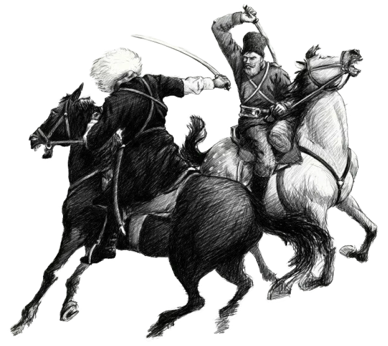

ЧЕРКЕСЫ
Адыги (самоназвание) народ группы адыгов в Российской Федерации. Народ черкесы относится к группе народов, которые называют себя адыгами. Абадзехи, шапсуги, натухаецы, хатукаевцы, кабардинцы, бесленеевцы, темиргоевцы, убыхи, жанеевцы, махошевцы, бджедуги, мамхеги, адамийцы, егерукаевцы, чебсин, хегаки, хетуки.
В России черкесов более 700 тысяч человек,
они проживают компактными массивами в Адыгее,
Карачаево-Черкесии, Кабардино-Балкарии,
а также в Краснодарском крае и на Ставрополье.
Большинство историков сходятся во мнении,
что адыги — коренное население предгорий
Северо-Западного Кавказа. Путешественники
называли эти места Черкесией как минимум
с XIII века, а предки адыгов, зихи, и вовсе
упоминаются ещё с античных времен.
АДЫГЭ ХАБЗЭ
адыгская этико-философская доктрина, свод
неписаных правил и законов.
Он включает в себя как нормы обычного права,
ак и моральные принципы, определяющие поведение
отдельного человека и нормы жизни общества в целом.
Хабзэ представляет собой спектр социальных правил
во всех областях жизнедеятельности, регулирует
простейшие житейские ситуации и решения
государственной важности.
При этом свод правил и норм не является статичной
неизменной системой, и долгое время он не был
закреплен ни в каких источниках.
СОБЫТИЯ
ИЗМЕНИВШИЕ ЖИЗНЬ
НАРОДА

Война длинною в 101 год, массовое переселение всего народа, исчезновение убыхских племён, присвоение статуса самого разделённого коренного народа России.
узнать больше в разделе «ИСТОРИЯ»какое участие приняли в развитии черкесского народа
ПЕРСОНЫ
имена выдающихся черкессов кто они и вчем прославились